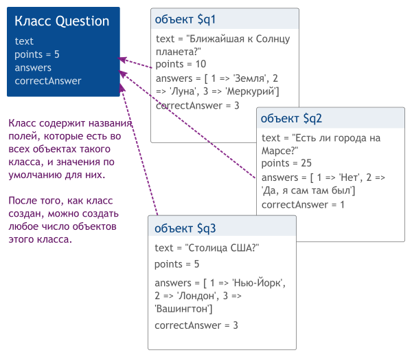

В этом уроке мы узнаем, что такое объекты и классы, как их использовать и для чего они нужны.
Как ты, помнишь, в PHP существуют данные разных типов: числа, строки, а также массивы. Еще один тип — это объекты.
Объект — это такая штука, которая содержит внутри себя переменные (они называются поля, свойства или члены) и функции (которые называют методами). Каждый объект относится к определенному классу (виду). Класс определяет, какие именно поля и методы есть в объекте, например «все объекты класса X имеют поля field1, field2 и field3». Классы описывает программист, то есть ты.
Порядок работы с объектами такой:
Объекты используются обычно для того, чтобы хранить свойства каких-то сущностей (предметов), с которыми работает программа. В этом уроке мы напишем программу для проверки знаний, которая умеет задавать вопросы и считать число правильных ответов. Нам надо как-то хранить в ней список вопросов, варианты ответов, число баллов за правильный ответ.
Объекты можно хранить в переменной, помещать в массив, передавать в функцию, возвращать из функций - в общем, делать все то же самое, что и с другими типами значений вроде чисел или массивов.
Попробуем для этого описать класс Question (Вопрос), объекты которого будут хранить в себе все это (один объект соответствует одному вопросу, такой объект еще иногда называют моделью вопроса).
Итак, у нас есть сущность «Вопрос» и у нее есть такие свойства: «текст вопроса», «число баллов за правильный ответ», «варианты ответов», «правильный ответ». Опишем соответствующий класс:
class Question
{
public $text; // текст вопроса
public $points = 5; // число баллов, по умолчанию 5
public $answers; // варианты ответов
public $correctAnswer; // правильный ответ
}
Этот код объявляет новый класс Question и определяет, что у всех объектов этого класса есть свойства text, points, answers и correctAnswers. Слово «public» обозначает, что эти свойства объекта можно читать и менять из любого места программы (доступ к свойству объекта можно ограничить, но это мы изучим позже). Также, мы указали, что свойство $points имеет значение по умолчанию 5. У остальных свойств значение по умолчанию не указано, и при создании нового объекта им будет присвоено значение null (если ты с ним раньше не сталкивался, то null - это специальное значение, которое обозначает отстутствие какого-либо значения. Мануал по null).
В общем, для объявления (создания) класса используется ключевое слово class:
class ИмяКласса
{
список полей и методов в классе;
}
Имя класса принято писать с большой буквы. Точку с запятой после закрывающей фигурной скобки ставить не надо (как и с функциями). У каждого класса должно быть уникальное имя, при попытке создать класс с таким же именем во второй раз будет ошибка:
class A { }
class A { } // в этом месте произойдет ошибка
Сам по себе этот код только объявляет класс и больше ничего не делает. Давай теперь создадим несколько объектов класса Question и заполним их поля полезными значениями.
Вот что примерно мы хотим получить в итоге: несколько объектов с вопросами и ответами.

Объект создается с помощью оператора создания нового объекта new, после которого надо указать, какого класса объект мы хотим создать.
// Создадим три объекта (так как у нас будет 3 вопроса в тесте), и сохраним их в трех переменных:
$q1 = new Question;
$q2 = new Question;
$q3 = new Question;
// Выведем содержимое первого объекта
var_dump($q1);
Посмотреть этот код в действии: http://ideone.com/l9S0eb. Он выводит что-то вроде этого:
object(Question)#1 (4) {
["text"]=> NULL
["points"]=> int(5)
["answers"]=> NULL
["correctAnswer"]=> NULL
}
Написан класс, к которому относится объект, порядковый номер и значения полей. Когда мы создаем новый объект, всем его полям присваивается либо значение по умолчанию (например, у поля points это 5), либо, если оно не указано, то значение null. Обратиться к полю объекта можно с помощью оператора ->, напоминающего стрелочку, состоящего из знака минус и угловой скобки. Слева пишется переменная, хранящая объект, а справа — имя поля. Используется он так:
$object->field = 4;
Обрати внимание, что доллар перед словом field писать не надо, если ты напишешь $object->$field, то будет ошибка (будет обращение не к полю field, а к полю, имя которого хранится в переменной $field).
Давай теперь заполним наши объекты вопросами и ответами. Поскольку у одного вопроса может быть несколько ответов, то мы используем массив для их хранения:
// Вопрос 1
$q1 = new Question;
$q1->text = "Какая планета располагается четвертой по счету от Солнца?";
$q1->points = 10; // 10 баллов за ответ
$q1->answers = array('a' => 'Венера', 'b' => 'Марс', 'c' => 'Юпитер', 'd' => 'Меркурий'); // Варианты ответа
$q1->correctAnswer = 'b'; // Правильный ответ
// Вопрос 2
$q2 = new Question;
$q2->text = 'Какой город является столицей Великобритании?';
$q2->points = 5;
$q2->answers = array('a' => 'Париж', 'b' => 'Москва', 'c' => 'Нью-Йорк', 'd' => 'Лондон');
$q2->correctAnswer = 'd';
// Вопрос 3
$q3 = new Question;
$q3->text = 'Кто придумал теорию относительности?';
$q3->points = 30;
$q3->answers = array('a' => 'Джон Леннон', 'b' => 'Джим Моррисон', 'c' => 'Альберт Эйнштейн', 'd' => 'Исаак Ньютон');
$q3->correctAnswer = 'c';
// Выведем содержимое, чтобы проверить, что все верно
var_dump($q1, $q2, $q3);
Посмотреть код целиком: http://ideone.com/FWJuCV
Объект чем-то напоминает массив (в котором тоже может содержаться много элементов: $q = ['text' => ...., 'points' => 10, ....]), но разница в том, что работая с объектом, ты точно знаешь какие поля там есть. Также, объекты относятся к тому или иному классу и по его названию понятно что хранится в объекте. А в случае с массивом ты должен искать в программе место, где он был создан, и изучать код. В больших программах (а реальные приложения очень большие) это требует много времени, потому c объектами работать намного удобнее. Вообще, объекты как раз и были придуманы для того, чтобы было можно писать большие приложения и не запутаться.
Ок, мы объявили класс, создали 3 объекта с вопросами. Теперь надо их вывести. Прежде чем писать код, давай сделаем небольшое улучшение: заводить на каждый вопрос новую переменную — неудобно, со временем мы можем сбиться и перепутать их номера. Давай лучше сделаем массив и будем добавлять объекты-вопросы в него по одному. Второе улучшение — мы завернем код создания объектов в функцию, так как наша программа становится большой и надо разбивать ее на отдельные части, чтобы не превратить в длинную нечитаемую портянку. Функция создает 3 объекта-Вопроса, кладет их в массив и возвращает его. Вот, что выходит в итоге:
// Функция, создающая массив с вопросами:
function createQuestions()
{
// Создаем пустой массив
$questions = [];
// Создаем и заполняем первый объект
$q = new Question;
$q->text = ...
...
// Кладем вопрос в массив
$questions[] = $q;
// Создаем второй объект
$q = new Question;
...
return $questions;
}
Теперь мы можем продолжить. Давай напишем функцию, выводящую список вопросов с вариантами ответов. На вход функции, естественно, надо дать массив с вопросами. Используем цикл для обходя всех вопросов и выведем для каждого текст и варианты ответов (для вывода ответов используем вложенный цикл):
function printQuestions($questions)
{
$number = 1; // номер вопроса
foreach ($questions as $question) {
echo "{$number}. {$question->text}\n\n";
echo "Варианты ответов:\n";
foreach ($question->answers as $letter => $answer) {
echo " {$letter}. {$answer}\n";
}
$number++;
}
}
Теперь осталось создать объекты-вопросы, вызвав первую функцию, и вывести их с помощью второй:
$questions = createQuestions();
printQuestions($questions);
Прекрасно! Давай теперь напишем еще и код для проверки ответов и выставления баллов. Было бы хорошо сделать интерактивный тест (который выводит вопросы и ждет, пока пользователь введет ответы), но так как мы используем ideone, то сделать это сложно, потому для простоты давай предположим, что мы уже собрали ответы и поместили их в массив. Пусть, например, массив содержит буквы a-d для каждого вопроса:
$answers = array('b', 'd', 'a');
Мы хотим проверить ответы, посчитать число баллов и вывести вопросы, на который дан неправильный ответ. Очевидно, нам для этого нужна еще одна функция (мы ведь не хотим писать код сплошной стеной). Она получает на вход массив вопросов и массив ответов.
function checkAnswers($questions, $answers)
{
// Проверим, что число ответов равно числу вопросов (защищаемся от ошибки)
if (count($questions) != count($answers)) {
die("Число ответов и вопросов не совпадает\n");
}
$pointsTotal = 0; // сколько набрано баллов
// сколько можно набрать баллов при всех правильных ответах
$pointsMax = 0;
// сколько отвечено верно
$correctAnswers = 0;
$totalQuestions = count($questions); // Сколько всего вопросов
// Цикл для обхода вопросов и ответов
for ($i = 0; $i < count($questions); $i++) {
$question = $questions[$i]; // Текущий вопрос
$answer = $answers[$i]; // текущий ответ
// Считаем максимальную сумму баллов
$pointsMax += $question->points;
// Проверяем ответ
if ($answer == $question->correctAnswer) {
// Добавляем баллы
$correctAnswers ++;
$pointsTotal += $question->points;
} else {
// Неправильный ответ
$number = $i + 1;
echo "Неправильный ответ на вопрос №{$number} ({$question->text})\n";
}
}
// Выведем итог
echo "Правильных ответов: {$correctAnswers} из {$totalQuestions}, баллов набрано: ? из ?\n";
}
Ну и теперь надо вызвать эту функцию, чтобы проверить ответы:
$questions = createQuestions();
printQuestions($questions);
$answers = array('b', 'd', 'a');
checkAnswers($questions, $answers);
Запустим программу (это ты должен сделать сам).
Ты можешь спросить, почему она пишет знаки вопроса вместо числа баллов? Хе-хе, потому что это часть домашнего задания для тебя, которое поможет закрепить тебе знания. Собственно, вот и задача:
В прошлом уроке мы разобрались с тем, что такое объекты и классы. В этом уроке мы продолжим их изучать.
Кроме полей, в классе можно объявить еще методы. Методы — это функции для работы с объектом. Попробуем разобрать, как они объявляются и используются, на примере.
В этом уроке примером будет программа для расчета зарплаты сотрудников международной динамично развивающейся компании «Вектор». Допустим, у нас есть список сотрудников, известно, сколько они отработали часов в каждую неделю, известа их почасовая оплата, требуется посчитать для каждого общее число часов и зарплату и вывести в такой табличке:
Сотрудник Часы Ставка З/п
Иванов И. 160 10 1600
Петров П. 140 8 1120
Всего 300 2720
Как и в прошлый раз, начнем с объявления класса, в котором опишем поля с информацией о сотруднике:
class Employee // employee значит «сотрудник»
{
public $name; // имя-фамилия
public $rate; // часовая ставка (сколько он получает тугриков за час работы)
public $hours = array(); // массив, содержащий отработанные часы по неделям
}
Хорошо, у нас есть класс, создадим пару объектов-сотрудников и сразу же сложим их в массив:
$ivan = new Employee;
$ivan->name = "Иванов Иван";
$ivan->rate = 10; // Иван работает за 10 тугриков в час
$ivan->hours = array(40, 40, 40, 40); // Иван работает по 40 часов в неделю
$peter = new Employee;
$peter->name = "Петров Петр";
$peter->rate = 8;
$peter->hours = array(40, 10, 40, 50); // Петр взял отгул и потому отработал меньше часов,
// но в последнюю неделю решил поработать побольше
$employees = array($ivan, $peter);
Посмотреть код целиком: http://ideone.com/7Y3SDw
Чудесно (обрати внимание, как легко пишется и аккуратно выглядит код с использованием ООП), у нас есть массив работников. Если надо, мы легко можем добавить туда еще несколько человек. Теперь надо пройтись по нему циклом и для каждого сотрудника посчитать общее число часов и зарплату.
В этом нам помогут методы (метод — это функция, объявленная внутри класса). Как и поля, методы описываются внутри класса. Давай добавим туда методы, которые будут считать эти величины. Для этого надо дописать в класс Employee несколько функций:
class Employee
{
public $name; // имя-фамилия
public $rate; // часовая ставка (сколько он получает тугриков за час работы)
public $hours = array(); // массив, содержащий отработанные часы по неделям
/** Считает общее число отработанных часов */
public function getTotalHoursWorked()
{
// Просто складываем значения часов в массиве
return array_sum($this->hours);
}
/** Считает зарплату */
public function getSalary()
{
// Получаем число отработанных часов
$hours = $this->getTotalHoursWorked();
// и умножаем на часовую ставку
$salary = $hours * $this->rate;
return $salary;
}
}
Метод, как ты видишь, объявляется как обычная функция, перед которой стоит слово public. Обрати внимание, после закрывающей скобки } не ставится точка с запятой (иначе будет ошибка). Метод вызывается с помощью оператора, напоминающего стрелку, ->, слева пишется объект, справа — имя метода и скобки:
echo "Иван отработал " . $ivan->getTotalHoursWorked() . " часов\n";
В общем, вызов метода выглядит так же, как обращение к полю объекта, только добавляются скобки. Также, в методе можно использовать специальную псевдопеременную $this. Она хранит указатель на объект, на котором был вызван метод. Если мы напишем:
echo $ivan->getTotalHoursWorked();
То внутри метода getHoursWorked() $this будет указывать на $ivan, и $this->hours соответственно получает поле hours у объекта $ivan. Если же мы вызовем этот же метод на другом объекте:
echo $peter->getTotalHoursWorked();
То в этот раз $this будет указывать на $peter и функция будет считать часы Петра. Ок, теперь попробуем использовать методы для вывода полезной информации:
foreach ($employees as $employee) {
echo "Имя: {$employee->name}\n";
echo "Ставка, тугриков в час: {$employee->rate}\n";
echo "Отработал, часов: {$employee->getTotalHoursWorked()}\n";
echo "Заработал, тугриков: {$employee->getSalary()}\n";
}
Код полностью: http://ideone.com/v0C99M
Кроме обычных методов, есть и так называемые «волшебные» методы, их имена начинаются с 2 подчеркиваний. Один из таких методов — это конструктор __construct (другие волшебные методы мы оставим на потом). Этот метод, если он объявлен в классе, автоматически вызывается при создании объекта. Например, с его помощью мы можем создавать не пустые объекты, а сразу при создании указать имя сотрудника и ставку. Вот, как выглядит класс с конструктором:
class Employee
{
public $name; // имя-фамилия
public $rate; // часовая ставка (сколько он получает тугриков за час работы)
public $hours = array(); // массив, содержащий отработанные часы по неделям
public function __construct($name, $rate)
{
// задаем имя и часовую ставку
$this->name = $name;
$this->rate = $rate;
}
.....
}
Если у класса есть конструктор, то при создании объекта после new и имени класса мы обязаны указать в скобках аргументы ($name и $rate) для этого конструктора:
$ivan = new Employee("Иванов Иван", 10);
// name и rate заданы через конструктор, потому осталось лишь написать часы
$ivan->hours = array(40, 40, 40, 40); // Иван работает по 40 часов в неделю
$peter = new Employee("Петров Петр", 8);
$peter->hours = array(40, 10, 40, 50);
Вот код с конструкторами целиком: http://ideone.com/VV8hib
Благодаря использованию конструктора, мы гарантируем, что у всех объектов-сотрудников будет указано имя и ставка. Если вдруг ты забудешь передать их при вызове new, то интерпретатор PHP выведет сообщение об ошибке. Ну и тот, кто захочет использовать твой класс, сразу увидит, какие аргументы обязательны для создания объекта. Поле hours мы не заполняем через конструктор, так как это необязательное поле и у работника вполне может быть пустой массив отработанных часов.
Задача конструктора - инициализировать все нужные для работы объекта поля. После его завершения объект готов к использованию.
Осталось сделать вывод в виде аккуратной таблички. Для этого нам понадобится написать функции padLeft($string, $length), которая будет дополнять строку $string пробелами слева, если она короче чем $length символов и padRight($string, $length), которая добавляет пробелы справа. Это нужно, чтобы значения в таблице оказались ровно друг над другом.
// Ширина колонок
$col1 = 30;
$col2 = 8;
$col3 = 8;
$col4 = 8;
// Заголовок таблицы
echo padRight("Сотрудник", $col1) .
padLeft("Часы", $col2) .
padLeft("Ставка", $col3) .
padLeft("З/п", $col4) . "\n\n";
// Сама таблица
foreach ($employees as $employee) {
echo padRight($employee->name, $col1) .
padLeft($employee->getTotalHoursWorked(), $col2) .
padLeft($employee->rate, $col3) .
padLeft($employee->getSalary(), $col4) . "\n";
}
Внимательный читатель может спросить, почему бы не использовать для вывода функцию вроде printf или sprintf, которая позволяет выводить данные в заданном формате, с выравниванием? Очень просто, эти функции, к сожалению, работают только с латинницей, и не поддерживают utf-8, а значит и русские буквы, потому приходиться выкручиваться.
Ты наверно, заметил, что код не дописан. Дописать его — и есть твоя задача на сегодня:
Допиши код, используя конструкторы, напиши недостающие функции padLeft/padRight, сделай вывод колонки «Всего». Не переусложняй код, там достаточно использовать 2 функции mb_strlen и str_repeat.
Также, сделай, чтобы выводилось не полное имя, а только фамилия и первая буква имени. Для этого надо будет добавить в класс метод getShortName(), который будет возвращать имя в нужном виде (например, с помощью preg_replace). При этом значение поля name менять не надо.
Усовершенствуй программу. Поскольку компания «Вектор» строго соблюдает закон, то она платит своим сотрудникам за овертайм (переработки) двойную ставку. Овертайм — это когда за неделю сотрудник отработал больше 40 часов. Например, Петр в последнюю неделю отработал 50 часов, их них 40 часов оплачиваются по обычной ставке, а 10 часов овертайма — по двойной. Для учета этого, добавь в класс методы getNormalHours() и getOvertimeHours(), и используй их при расчете зарплаты. Таблица должна при этом выглядеть как-то так:
Сотрудник Часы Овертайм Ставка З/п
Иванов И. 160 0 10 1600
Петров П. 140 10 8 1200
Всего 300 10 2800
Объекты можно хранить в переменных, массивах, передавать в функции и возвращать из функций. Но у них есть одна особенность, которой нет у других типов данных. Когда ты передаешь в функцию или копируешь в другую переменную строку или массив, создается новая копия. Если ты изменишь что-то в ней, исходная переменная не меняется:
$a = ['x' => 1, 'y' => 2];
$b = $a; // происходит клонирование массива
$b['x'] = 10; // мы меняем только копию в $b,
// $a остается неизменной
echo $a['x']; // выведет 1
Копирование объектов работает по-другому. В переменных хранится не сам объект, а лишь его идентификатор, по которому его можно найти. Соответственно при копировании значения мы просто копируем указатель на тот же самый объект:
class Example
{
public $value;
}
$a = new Example;
$a->value = 1;
$b = $a; // В $b находится указатель на тот же объект
$b->value = 2;
echo $a->value; // выведет 2
Если ты сделаешь var_dump(), то ты увидишь что объекты в $a и $b имеют один и тот же порядковый номер.
То же самое происходит при передаче объекта в функцию - передается лишь указатель на него и функция может изменять исходный объект. Если ты копируешь или передаешь массив, содержащий объекты, то создается копия массива, хранящая указатели на те же самые объекты.
На первый взгляд, это странно, но в 99% случаев именно это и требуется. Ведь объект обычно представляет какую-то сущность. Если у нас будет много копий одного объекта, то трудно будет понять, в какой из них актуальные данные.
Если требутся сделать именно независимую копию, можно использовать оператор клонирования объекта clone, который сделает новую, независимую копию:
$b = clone $a;
Если объект содержит в своих полях другие объекты, то они не клонируются, а лишь копируется указатель на них. Если тебе это не нравится, ты можешь определить "магический" метод __clone в классе. Он будет вызван после клонирования, и в нем ты можешь вручную склонировать дочерние объекты. Подробнее это описано в мануале.
Повторим еще раз: новый объект создается только операторами new или clone. Во всех остальных случаях вроде присваивания $a = $b или передачи в функцию просто копируется ссылка на существующий объект.
Официальный мануал по копированию и клонированию: http://php.net/manual/ru/language.oop5.cloning.php
Аггрегация - это когда мы храним один объект в свойстве другого объекта. Ее можно использовать, например, когда у нас есть 2 разных класса с похожим набором свойств, или один класс с повторяющимися свойствами. Чтобы не дублировать их, мы можем вынести их в отдельный класс.
Допустим, мы делаем приложение для хранения итогов футбольного турнира. Мы хотим объявить класс Матч (Game), хранящий информацию о том, когда прошла встреча, какие команды играли и какой был итог. Можно попробовать написать такой код:
class Game
{
public $date; // Дата встречи
public $nameA; // Название первой команды
public $countryA; // Страна первой команды
public $playersA; // Массив с именами игроков
public $scoreA; // Число очков, набранное первой командой
public $countryB; // Страна второй команды
public $nameB;
public $playersB;
public $scoreB;
}
Здесь есть такие недостатки: во-первых, у нас есть 2 набора однотипных полей. Во-вторых, если команда провела несколько матчей, то в каждом объекте, представляющем итоги матча, мы дублируем одни и те же данные.
Можно решить проблему, сделав Команду отдельной сущностью, и объявив для нее отдельный класс. А в объекте класса Game просто хранить объекты-команды, участвовавшие во встрече. Вот как это будет выглядеть:
class Team
{
public $name; // название команды
public $players;
public $country;
}
class Game
{
// объект класса Team, представляющий первую команду
public $teamA;
// вторая команда
public $teamB;
// дата и итоги встречи
public $date;
public $scoreA;
public $scoreB;
}
Заметь, что мы не стали выносить поле с числом очков в класс Team, так как это свойство Матча, а не Команды и одна Команда может участовать в нескольких Матчах с разным счетом.
Кроме аггрегации есть еще другой вариант хранения одних объектов внутри других - композиция. Она отличается от аггрегации тем, что внутренние объекты не могут существовать отдельно от внешнего, создаются самим внешним объектом в конструкторе или методах (а не где-то снаружи), и уничтожаются вместе с родителем. В нашем примере мы можем создать Команду, не участвовавшую ни в одном Матче, а при уничтожении Матча (например, если результаты отменили) Команды продолжают существовать. Потому у нас аггрегация.
Примером композиции может быть Университет и Факультеты или Компания и Отдел в ней: факультет не может существовать без университета, сам по себе.
Википедия: композиция и аггрегация
Я знаю, тебе уже хочется решить новую задачу на ООП, но подожди еще немного.
Наследование позволяет создать новый класс не с нуля, а расширив уже существующий. Мы берем созданный ранее класс (класс-предок) и добавляем или переопределяем в нем поля и методы. Для этого используется такой синтаксис:
class ИмяНаследника extends ИмяПредка { ... }
Ну например:
class A
{
public $a = 1;
public $b;
public function getSomething() { ... }
}
class B extends A
{
public $a = 10;
public $c;
public function getSomething() { ... }
}
Класс A (предок или суперкласс) содержит поля a и b. Класс B (потомок, наследник, подкласс) наследует от него поля a и b (при этом переопределив значение по умолчанию для a) и содержит дополнительное поле c. Также, он переопределяет метод getSomething().
Нельзя наследовать что угодно от чего угодно. Наследование должно применяться только для однотипных сущностей. Например, класс Банк можно унаследовать от класса Организация (так как банк - это вид организации), а вот унаследовать класс Работник от Организации нельзя. Также, нельзя унаследовать Организацию от Банка, так как Организация - это более широкое понятие. Сам PHP конечно не проверяет что ты наследуешь, но люди, которые будут читать код, во втором случае запутаются.
Наследуются все поля и методы, отказаться или удалить часть из них нельзя, можно только переопределить. Согласно принципу подстановки Лисков (это фамилия, а не название инопланетной расы) должна обеспечиваться совместимость - объект класса-наследника можно использовать в коде вместо объекта класса-предка, а при удалении полей совместимость бы нарушилась. Если ты переопределяешь метод, то список его аргументов и тип возвращаемого значения должны быть совместимы с одноименным методом в классе-предке.
Когда ты переопределяешь метод, ты можешь захотеть вызвать одноименный метод класса-предка. Если ты напишешь
class B extends A
{
public function doSomething()
{
$x = $this->doSomething();
...
то вызовешь сам себя и получишь вечный цикл, программа зависнет (пока не упрется в ограничение на число рекурсивных вызвовов функций). В данном случае надо написать довольно странную конструкцию parent::doSomething():
public function doSomething()
{
$x = parent::doSomething();
...
Рассмотрим пример, где можно применить наследование. Если мы делаем тест, то у нас могут быть разные типы вопросов:
Если мы захотим описать оба вида вопросов одним классом, то столкнемся с тем, что часть полей лишняя - например в вопросе с вводом числа поле "варианты ответа" не нужно. Решить проблему можно, сделав 3 класса: общий для любых типов вопросов (назовем его "абстрактный вопрос", AbstractQuestion) и 2 конкретных класса для разных типов вопросов:
// Базовый класс, содержит поля используемые
// во всех видах вопросов
class AbstractQuestion
{
public $text;
}
// Вопрос с выбором вариантов
class ChoiceQuestion extends AbstractQuestion
{
public $options; // варианты ответа
public $correntOption; // правильный вариант
}
// Вопрос с вводом числа
class NumericQuestion extends AbstractQuestion
{
public $answer; // ответ
public $deviation; // допустмая погрешность
}
Как видишь, эта схема хорошо расширяема - мы можем создавать новые типы вопросов, добавляя классы. Наследование имеет и недостатки:
Также, при наследовании есть правило: класс-предок не должен ничего знать о своих наследниках. Он не имеет права обращаться к полям или методам, которые появляются только в наследниках и которых нет в нем самом. Это логично: ведь кто-то сделать еще одного наследника и не добавить туда эти поля.
Потому оно используется не так часто. Мануал: http://php.net/manual/ru/language.oop5.inheritance.php
В примере выше, у нас есть один класс, объекты которого создавать нет смысла - это AbstractQuestion. Он содержит текст вопроса, но не содержит ответа и потому бесполезен. Такой классы нужно помечать как абстрактный. Это делается добавлением слова abstract в определение класса:
abstract class AbstractQuestion
{
...
Добавляя слово, ты информируешь всех, кто будет читать твой код. Также, это защищает тебя от неточностей: если ты попытаешься создать объект абстрактного класса, то PHP откажется это делать и выведет соответствующую ошибку. Абстрактный класс - это класс, объекты которого создавать нельзя. Он нужен только как основа для наследования.
Давай посмотрим на эти 3 класса еще раз. Хорошо бы добавить в них метод для проверки ответа, который получает ответ и сообщает, правильный он или нет. Очевидно, что способ проверки будет разный для разных видов вопросов, потому в каждом классе будет свой вариант метода. Попробуем дописать методы проверки в классы ChoiceQuestion и NumericQuestion:
class ChoiceQuestion
{
...
public function checkAnswer($answer)
{
...
Мы создаем 2 метода в разных классах с одинаковым названием checkAnswer. Вроде, мы решили задачу, но тут есть такие недостатки:
checkAnswerОбе эти проблемы можно решить, добавив в класс AbstractQuestion абстрактный метод. Это метод, у которого есть только заголовок, но нет тела. Что-то вроде недоделанной заготовки. Классы-наследники обязаны релизовать (переопределить) такой метод, иначе PHP выдаст ошибку. Вот как это выглядит:
class AbstractQuestion
{
...
// метод, проверяющий ответ на вопрос
abstract function checkAnswer($answer);
...
Мануал по теме: http://php.net/manual/ru/language.oop5.abstract.php
Отдохнем немного от теории, решив задачку.
Доработай программу вывода вопросов и проверки ответов, добавив в нее тип вопросов с вводом числа. Ну например, "чему равна скорость света в км/с", "чему равно число Пи", и тд. Тебе придется создать несколько классов для разных типов вопросов.
В ходе ее решения у тебя может возникнуть желание определить, объект какого именно класса перед тобой. Не делай так. Вместо этого, вынеси код, который должен вести себя по-разному для разного типа вопросов (например, вывод вопроса или проверка ответа) в абстрактные методы.
Программа не должна полагаться на то, что существует всего 2 вида вопросов. Она должна позволять добавлять новые виды вопросов, не трогая существующие классы.
Раньше мы всегда писали перед полями и методами слово public. Это слово определяет откуда можно обращаться к полю или вызывать метод, в данном случае - из любого места кода, ограничений нет. Вместо него можно также указывать другие варианты - protected или private.
private разрешает обращение к полю или методу только внутри того же класса. protected - внутри того же класса и всех его наследников (но не предков, так как предок не должен знать ничего о наследниках - помнишь?). Заметь что разграничение идет именно на уровне классов, а не объектов: один объект может обратиться к private полю другого, если они относятся к одному классу.
На первый взгляд непонятно, зачем это нужно? Зачем делать лишние ограничения и усложнять себе жизнь? Ответ в том, что как раз отсутствие ограничений усложняет жизнь программисту.
Во-первых, если ты хочешь использовать какой-то класс, и изучаешь его код, то ты можешь смело пропускать private и protected элементы в нем - ты все равно не можешь к ним обращаться. Получается, тебе надо изучать меньший объем кода - только публичную часть класса.
Во-вторых, если поле имеет тип public то его можно менять из любого места кода. И представь, что тебе надо разобраться откуда в нем появляется неправильное значение - тебе придется делать поиск по всему коду программы, а реальные приложения могут быть очень большими по объему. В случае, если поле имеет тип private, тебе придется изучить только один класс.
Ну и наконец если ты пишешь какой-то класс, а другие им только пользуются, то с помощью public/private ты можешь определить - к каким полям и методам имеешь доступ только ты и таким образом защититься от того, что кто-то запишет в них что-то неправильное. Ты можешь сделать вообще все поля private, в таком случае снаружи можно будет вызывать только методы, а в методе ты можешь поставить проверку на неправильное значение и отказываться его принимать. Ну например если мы пишем класс Работник, а в нем метод для задания его зарплаты, мы можем принимать только неотрицательное число:
private $salary = 0; // зарплата
public function setSalary($salary)
{
if ($salary <= 0) {
throw new Exception("Зарплата должна быть больше нуля");
}
$this->salary = $salary;
}
Так как поле salary приватное, и запись в него возможна только через метод setSalary, то мы гарантируем что в нем не появится некорректное значение. Странная конструкция throw new ... - это выброс исключения, которая выводит сообщение об ошибке и завершает программу. О них подробнее я напишу позже.
Такой подход, когда класс скрывает (инкапслирует) в себе логику работы с данными и сами данные, а наружу выставляет только небольшое число публичных методов, называется инкапсуляция. Пользователю этих методов не важно, как класс устроен внутри, как он хранит данные, ему достаточно вызвать нужный метод, чтобы получить результат.
Это упрощает понимание кода: тебе не надо читать и разбирать код класса, достаточно прочитать название метода (и может быть комментарий к нему). Также, это упрощает изменение кода: если какое-то свойство имеет уровень private то доступ к нему возможен только из того же класса и тебе не надо бегать по всему коду и смотреть что там с этим свойством делается, тебе достаточно просмотреть один файл с этим классом.
Инкапсуляция это хорошо. Так как весь код, который занимается одной задачей, оказывается заключен внутри одного класса. Противоположный случай это когда код (или знание о его внутреннем устройстве) вылезает из класса и размазывается по всей программе.
Если проводить аналогии, то можно представить кофе-машину. Ты нажимаешь кнопку (=вызываешь публичный метод) и получаешь кофе (=результат вызова этого метода), при этом ты не видишь что происходит внутри нее и тебе не надо в этом разбираться.
Ссылка: http://php.net/manual/ru/language.oop5.visibility.php
Тайп хинты позволяют указать, что аргумент функции должен быть определенного типа (например быть объектом определенного класса или его наследника). Тайп хинт делает код понятнее (так как видно, какого типа переменная) и надежнее (так как PHP не позволит передать что-то неразрешенное и ты сразу увидишь ошибку). Используй их везде.
Вот пример заголовка функции с тайп-хинтами:
function doSomething(SomeClass $a, array $b)
Это значит, что в качестве $a можно передать только объект класса SomeClass или его наследника (помнишь принцип подстановки со странной фамилией? он говорит о том, что объект класса-наследника можно использовать вместо объекта класса-предка). А в качестве $b - любой массив.
В PHP5 нельзя указывать тайп-хинты для строк или чисел. Если ты напишешь int или string - то PHP подумает что это такое имя класса. А вот в PHP7 - будет можно. Кроме того, там можно будет указывать тайп-хинты еще и для указания типа результата функции (а когда-нибудь и типы для полей объекта). Заживем!
Вот пример, работающий в PHP7:
// Функция, принимающее целое число (или строку с целым числом)
// и возвращающую на выходе объект класса SomeClass или
// его наследника
function doSomething(int $a):SomeClass
Мануал: http://php.net/manual/ru/language.oop5.typehinting.php
В PHP можно объявлять константы в классе (разумеется, они должны иметь к нему какое-то отношение). Их можно использовать для обозначения одного из вариантов значения свойства. Ну например, если мы пишем приложение для обработки заявок и жалоб от пользователей, и у нас в классе Заявка есть поле "статус" (в каком состоянии заявка: ведется работа, выдан отказ, удовлетворена, передана в другую организацию), то на первый взгляд, можно использовать для этого обычные строки:
$report->status = 'Удовлетворена';
Но этот подход имеет недостатки:
Решение - сделать в классе Заявки константы, обозначающие разные статусы. Если ты опечатаешься в имени константы, PHP сообщит тебе об ошибке, и нетрудно увидеть какие вообще статусы бывают. Вот пример кода:
class Report
{
const STATUS_NEW = 1; // пока не проверена
const STATUS_WORKING = 2; // ведется работа
const STATUS_REJECTED = 3; // отказ
const STATUS_DONE = 4; // выполнена
...
}
$report->status = Report::STATUS_DONE;
Имена констант пишут заглавными буквами, разделяя слова подчеркиваниями.
Мануал: http://php.net/manual/ru/language.oop5.constants.php
Исключения позволяют сообщить о неожиданной ситуации в программе. Ну например, в метод, задающий зарплату работника, передано отрицательное число. Это говорит о том, что в программе скорее всего ошибка, и необходимо подождать пока программист разберется и исправит ее.
Урок по исключениям: https://github.com/codedokode/pasta/blob/master/php/exceptions.md
http://php.net/manual/ru/language.oop5.php
Почитать про ООП можно также в книгах:
Если ты дошел до этого абзаца, ты наверно чувствуешь себя другим человеком. Еще вчера ты писал примитивные программы, а сегодня ты с легкостью можешь решить любую проблему, построив красивую и стройную модель из классов. Ведь именно объектно-ориентированное программирование - это то, что позволяет писать большие и сложные программы. Большинство современных приложений, вроде Microsoft Word, Photoshop или Google Maps построены с использованием ООП.
Прекрасно! Пришло время перейти от разминочных к настоящим задачам.
В большой международной перспективной компании «Вектор» есть 4 департамента: департамент закупок, продаж, рекламы и логистики. В этих 4 департаментах работают менджеры (ме), маркетологи (ма), инженеры (ин) и аналитики (ан).
Менеджер получает 500 тугриков в месяц, выпивает 20 литров кофе и производит 200 страниц отчетов в месяц
Маркетолог — 400 тугриков, 15 литров кофе и 150 страниц отчетов
Инженер — 200 тугриков, 5 литров кофе и 50 страниц чертежей
Аналитик — 800 тугриков и 50 литров кофе и 5 страниц стратегических исследований
Кроме того, все сотрудники бывают 3 рангов: первого, второго и третьего. Сотрудник второго ранга получает на 25% больше, чем первого, а сотрудник 3-го ранга - на 50% больше, чем первого.
Для удобства, мы будем обозначать должность сокращенно, например менеджер 2-го ранга = ме2.
Вот состав департаментов:
Департамент закупок: 9×ме1, 3×ме2, 2×ме3, 2×ма1 + руководитель департамента ме2
Департамент продаж: 12×ме1, 6×ма1, 3×ан1, 2×ан2 + руководитель ма2
Департамент рекламы: 15×ма1, 10×ма2, 8×ме1, 2×ин1 + руководитель ма3
Департамент логистики: 13×ме1, 5×ме2, 5×ин1 + руководитель ме1Руководитель получает на 50% больше, чем обычный сотрудник того же уровня, пьет в 2 раза больше кофе, и не производит отчетов, чертежей или стратегических исследований.
Задание: напиши программу для учета расходов и результатов работы всего дружного коддектива компании «Вектор». Программа должна вывести:
Департамент сотр. тугр. кофе стр. тугр./стр.
-----------------------------------------------------------------------
Закупок 25 45040 100 10 450.4
Продаж 14 56000 150 12 560
....
Среднее 23.5 35600 170 15 500
Всего 120 120000 220 34 2000
На первый взгляд, наверно, задача кажется неприступной. Но не стоит паниковать! Держи подсказки.
Когда ты решаешь задачу на ООП, ты должен ответить на вопросы:
Не путай базовую ставку в профессии и итоговую зарплату сотрудника - это разные вещи.
Возможно, тут стоит сделать не один класс Сотрудник, а 4 класса: Инженер, Менеджер, и т.д. Тогда мы можем легко менять правила расчета зарплаты или кофе для каждой профессии. Естественно, копипастить одинаковый код в 4 класса не надо — создай базовый абстрактный класс Сотрудник и унаследуй от него 4 класса-профессии. Правда этот подход имеет недостаток: в этом случае мы не можем поменять профессию сотрудника (чтобы ее возможно было менять, надо сделать отдельно класс Сотрудник, и отдельно же классы для каждой профессии. Это усложнит код, но сделает его более универальным).
Наследование (мануал) позволяет создавать класс не с нуля, а расширяя сущеcтвующий класс. Наследовать можно только однотипные сущности, например унаследовать Менеджера от Сотрудника можно, а допустим Танк от Инженера - неправильно.
«Абстрактный» — это класс, объект которого нельзя создать. Он предназначен для наследования от него других классов.
Также, ты должен для всех полей и методов расставить модификаторы доступа
(pubic, private, protected - они определяют, откуда можно обращаться к
полю или методу). Ты должен подумать логически и для каждого поля/метода
определить: это часть кода, которая относится к внутренней логике класса
и не должна быть доступна снаружи, или же это часть кода, которая должна
быть доступна. Ну к примеру, в Департаменте метод
посчитатьОбщиеЗатратыНаЗарплату() должен быть публичным -
для этого мы и пишем класс, чтобы считать затраты.
В общем, чем меньше публичных свойств и методов, тем лучше. Ведь когда другой разработчик или ты сам захочет использовать класс, он будет смотреть только на публичные элементы, и чем их меньше, тем проще разобраться как класс работает. Но не стоит закрывать вообще все: надо думать, является ли метод частью внутренней логики класса или он предназначен для выдачи полезной информации.
Когда ты проектируешь класс, ты можешь представить себе что ты делаешь некую коробочку, из которой торчат переключатели и провода. Публичные свойства и методы - это то, что ты разрешаешь использовать другим программистам. Приватное - это то, что скрыто внутри коробки и что они трогать не должны.
Ты наверно думал, что твои мучения закончились? Нет, не так быстро. Пришло время проверить, соответствует ли твой код принципам ООП? Гибок ли он и легко ли поддается изменениям?
Пока ты решал задачу по выводу отчета о сотрудниках и департаментах, разразился мировой экономический кризис. Доходы компании начали снижаться, и совет директоров поставил перед руководством задачу принять меры. Менеджеры 3-го ранга, блестящие выпускники топовых экономических вузов столицы, быстро смогли разработать три альтернативных антикризисных решения:
Совет директоров в затруднении: какой путь выбрать? Помоги им с этим, распечатав прогноз по потреблению и расходам (аналогичный тому что требуется в первой части задачи) после принятия каждой из мер.
Есть поле размером N×N (задается в переменной), на нем есть несколько кошек и несколько мышек (расставляются случайно).
Мышка может ходить на одну клетку по горизонтали или вертикали, видит карту в квадрате 9×9 (сама мышка в центре этого квадрата) и старается убежать, если видит кошку (что делать, если мышка видит несколько кошек с разных сторон, решать тебе). Если не видит — просто идет в случайно выбранную сторону или куда-то еще. Если некуда ходить, все клетки вокруг заняты — стоит на месте.
Кошка ходит на одну клетку по горизонтали, вертикали, диагонали в любую сторону, и видит всю карту. Если кошка ходит на клетку с мышкой, то она ее ловит и съедает. Правда, если на соседних по горизонтали, вертикали, диагонали с мышкой клетках есть еще 2 мышки, то кошка не может съесть мышку и встать на ее клетку (мыши объединяются и защищают друг друга).
Если кошка съела мышку, ей надо отдохнуть, и 1 ход она после этого пропускает. Если кошка бегала 8 ходов подряд, то она тоже засыпает и пропускает 1 ход. Каждый ход, сначала ходят все мышки и только потом все кошки.
Напиши программу, которая рассчитает, что происходит в течение, например, первых 20-30 ходов и выводит состояние игры на каждом ходе, например, так (@ = спящая кошка):
...@.... ход: 1
..2...3. кошек: 2
........ мышек: 4
....К...
1.......
......4.Потом можно будет добавить еще одного персонажа, Собаку. Собака прыгает на 2 клетки в 1 из 8 направлений, если там есть свободная клетка. Собака ни за кем не охотится, так как она глупая, и просто бегает в случайном порядке. Кошка не может сходить на соседнюю с собакой клетку, так как боится ее. Мыши могут этим пользоваться.
Вот, как можно реализовать алгоритм выбора оптимального хода для любого животного:
ВариантХода кстати вполне можно сделать объектом, мы же ООП изучаем.
Заметь что этот алгоритм подходит к любому животному, единственное, что различается - это оценочная функция и функция генерации списка возможных ходов (так как разные животные ходят по разному).
Саму оценочную функцию можно написать так: определяем факторы, которые влияют на поведение животного, оцениваем их в баллах и складываем с весом (более важные факторы имеют больший вес), чтобы получить итоговую оценку. К примеру, для мыши факторы могут быть такие:
Также важно расставить правильный вес для этих факторов, чтобы например ход в угол все же был выгоднее, чем ход навстречу кошке.
Так как поле состоит из клеточек, у тебя может появиться желание сделать двухмерный массив для хранения животных. Не советую так делать, ведь этот массив надо будет поддерживать в актуальном состоянии. Проще хранить обычный одномерный массив животных, находящихся на карте.
-----
Куда вводить код? Что надо скачать? Читай первый урок.
Есть вопросы? Задай гуглу или автору.
Нравится урок? Лайкай, репости, приглашай друзей, пости котов и Канако, шли добра, решай задачи, помогай новичкам! Кнопок для лайка нет, кто хочет зарепостить, всегда может сделать это ручками.
Как связаться с автором? Я хочу переодеть его в платье школьницы и жениться на нем. Ящик codedokode (кот) gmail.com ждет ваших писем. А вконтактик и фейсбучек ждут ваших лайков. Но ответ на банальные вопросы лучше искать в Гугле или на stackoverflow.
Я решил задачку!!! Молодец, делай следующий урок
Ideone не работает!11 Ну так открой Гугл и найди сайты вроде https://repl.it/languages/php , http://phptester.net/ , http://sandbox.onlinephpfunctions.com/ , http://codepad.org/ или http://www.runphponline.com/ . Не ленись.
Почему так много рекламы? Всю рекламу на сайте ставит юкоз (бесплатный хостинг же), а не я.
На сайте установлена система Google Analytics (и еще несколько аналогичных систем от юкоза). Данные о твоем IP-адресе, посещаемых страницах, времени посещения отправляются в Google Corporation, США. Хочу знать, кто и зачем сюда заходит. Поверь, другие сайты делают точно так же. Все сайты пишут логи.